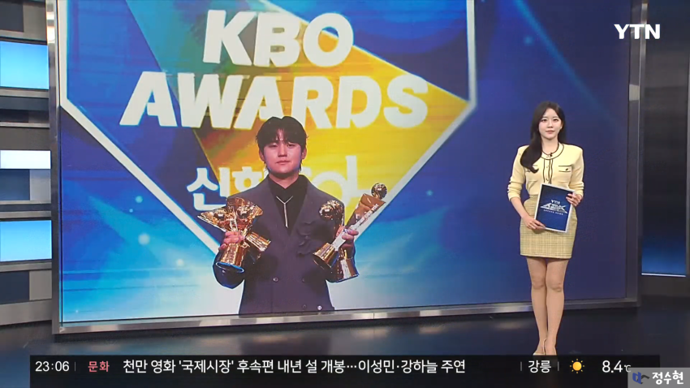
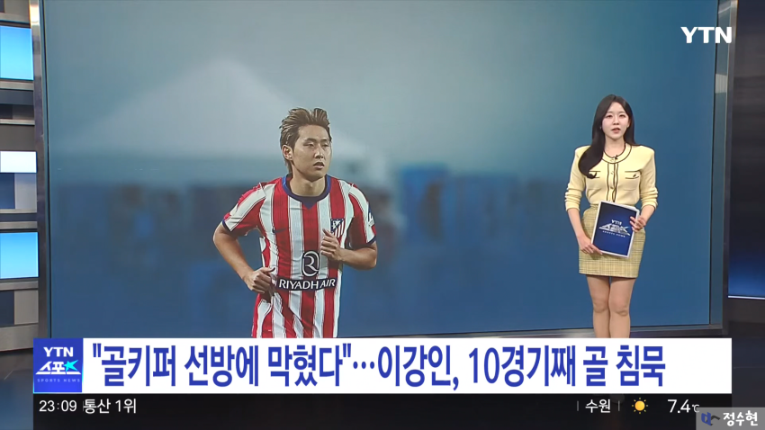
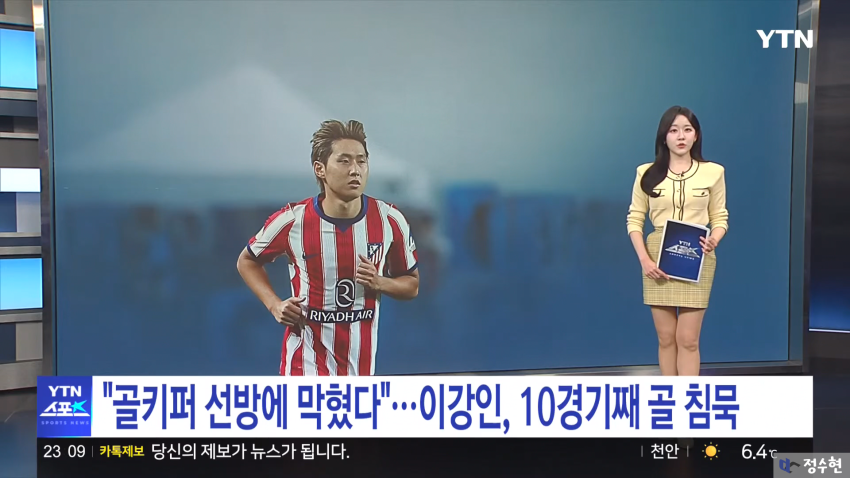
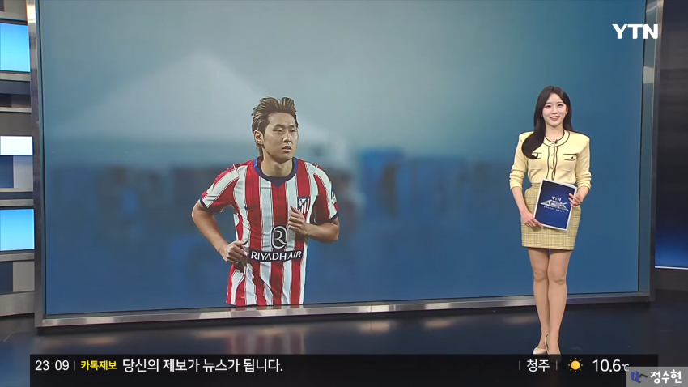
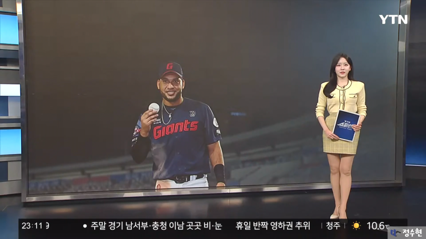
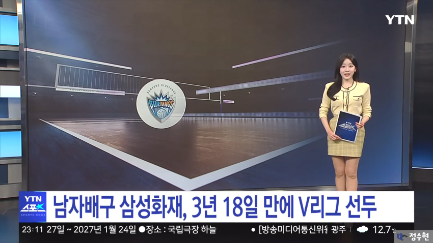
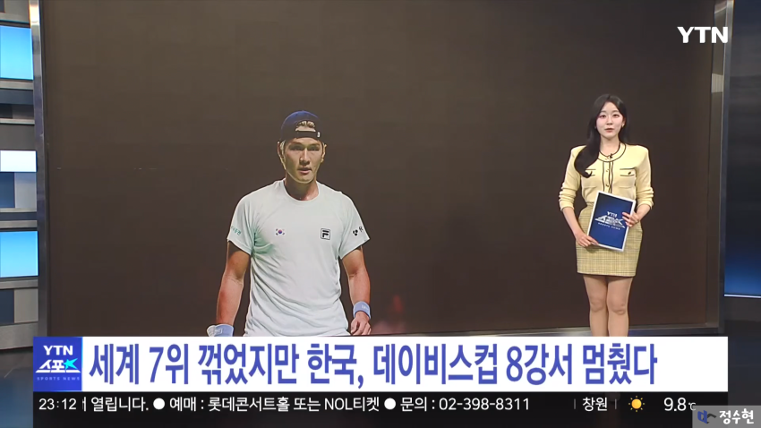
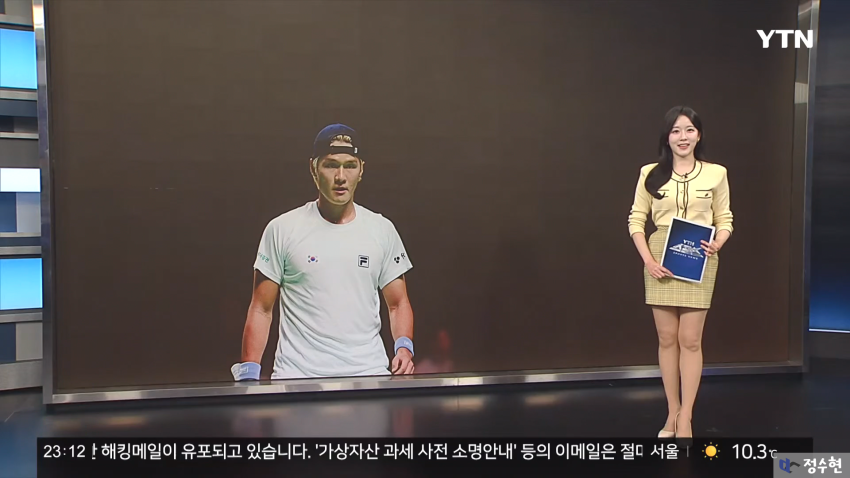
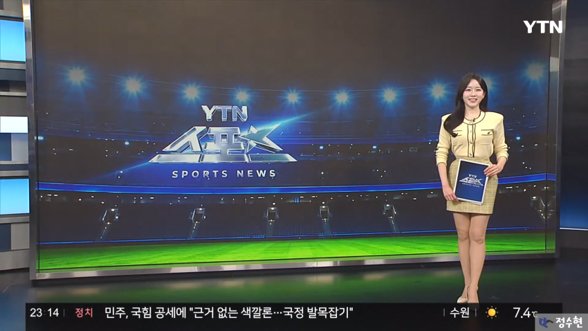
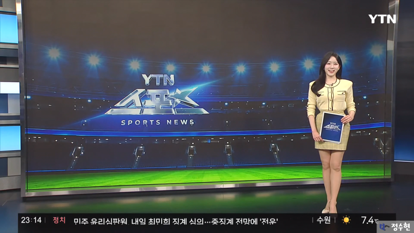

댓글
수집 당시 댓글 10개
봇치쟝 · 11.27 10:11:47
· ㅇㅇ · 11.27 10:12:23
· 봇치쟝 · 11.27 10:16:37
아미야콘 · 11.27 10:12:50
ㅇㅇ · 11.27 10:19:06
ㅇㅇ · 11.27 10:29:08
ㅇㅇ · 11.27 11:39:40
ㅇㅇ · 11.27 12:37:23
ㅇㅇ · 11.27 14:25:33
ㅇㅇ · 11.27 18:37:28